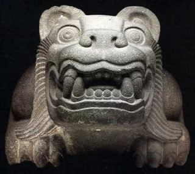
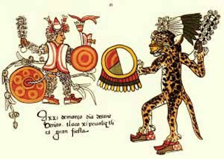
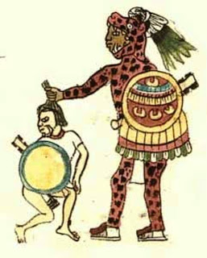

Mi Cuenta
La Leyenda del Jaguar
Compilado de articulos relacionados con la figura del Dios Jaguar
El culto al Jaguar : Culto al inframundo
El jaguar es un cazador solitario, su mayor actividad se desarrolla al amanecer y a la puesta del sol. Tiene una notable visión en la oscuridad; y puede detectar el olor de sus presas a grandes distancias. Es un animal solitario. Por lo general los adultos sólo se encuentran para el cortejo y el apareamiento y suele establecer un amplio territorio y defenderlo. La pantera, leopardo o jaguar es un tótem muy antiguo y poderoso. Un tótem puede ser el símbolo de una tribu, clan, familia o individuo.
El jaguar es muy sigiloso durante la caza. El silencio es su espada y su poder. El silencio es muy respetado entre los indios americanos y es visto como un estado sagrado de la consciencia. El Jaguar es conocido y venerado en todas las grandes culturas y civilizaciones verdaderas. Reverenciado por casi todas las culturas precolombinas de América y especialmente las mesoamericanas, que tendían a divinizar a ciertos animales que convivían con ellos, especialmente con cuatro animales: la serpiente, la mariposa, el quetzal y el jaguar.
El jaguar otorgaba la ferocidad y la grandeza. La imagen del jaguar aparece ligada a un contexto eminentemente belicista. El guerrero necesitaba sentirse un jaguar para poder derribar a sus enemigos. Para determinadas culturas como la olmeca, los grandes sacerdotes eran capaces de transformarse en jaguar por las noches y destruir a sus enemigos.
El proceso de selección del jaguar como símbolo, esta representado con mayor intensidad en las culturas formativas (arcaicas) regionales a lo largo de los Andes y áreas periféricas. Nos referimos con esto a culturas regionales de Valdivia, Machalilia, Chorera en Ecuador, Chavín en Perú, San Agustín en Colombia, Chiripa en Bolivia, San Pedro de Atacama I y II en Chile, Aguada, Ciénaga y Condorhuasi en Argentina.
El Jaguar y la cultura maya:
El reino del jaguar controla, las fuerzas cósmicas del día y la noche, por ello el símbolo del Jaguar para los mayas representa la fuerza divina y el dominio sobre todas las cosas del cielo y de la tierra. Para los Mayas, el dios jaguar dominaba la noche y el día, el dios Sol, se transformaba en jaguar para poder viajar durante la noche por el mundo de los muertos (jiwatas, aca pacha, alaxpacha y manqa pacha). Y al anochecer luchaba contra Xilbalban (el inframundo), venciéndolo y saliendo una vez más al día siguiente. La piel moteada de este bello felino, representaba las estrellas.
En la cultura Maya el jaguar era denominado Balaam o Chac, y era símbolo de poder. La gente que utiliza vestimentas de jaguar son personas con autoridad en la sociedad.
Las ruinas Mayas de Yucatán presentan elaboradas imágenes del jaguar. Los mayas identificaban al jaguar con el número nueve, simbólico número del inframundo. El dios felino es así "Señor de lo de abajo". Es también la tierra que, con sus fauces abiertas devora al sol entre las extenuadas luces del crepúsculo. Y luego, el animal moteado se muta en sol negro, viajero de la tierra subterránea que lleva sobre sí una concha marina; representación de la luna y, de manera paralela, del renacimiento (por ser la Luna, la que renace en el cielo nocturno luego de tres noches de muerte o ausencia).
Su repetida victoria en el mundo infernal le otorga al jaguar poderes como guía del alma de los muertos. En esta arista de su existencia, es el perro Xólotl, dios canino quien acompaña al sol-jaguar, al sol de tierra, en sus nocturnas incursiones por las honduras terrestres. Es la habilidad del jaguar como guía lo que permite franquear los nueve ríos que impiden el libre acceso al Chocome Mictlan, el noveno cielo, inmortal residencia de los muertos.




